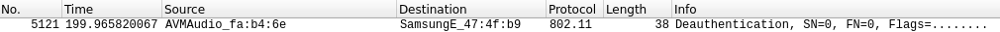
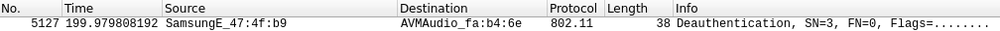

Dauth Attack
VulnerabilityIn normal condition, a
station(device) associated to an AP(router), can terminate the association at any time by sending a
disassociation frame.
Dauth Attack
Deauthentication attack is a type of attack which targets the communication between router(Access
Point) and a device.
1. Select network and capture data
2. Perform deauth attack.
◇ The attacker
send a deauthentication frame to a wireless AP, with the spoofed address of the victim device
 ◇ The attacker send a deauthentication frame to the
victim device, with the spoofed address of the wireless AP
3. Capture WPA handshake
4. Attempt to crack the handshake
Bibliography:
https://securitytutorials.co.uk/how-to-capture-crack-wpa-wpa2-wireless-passwords/